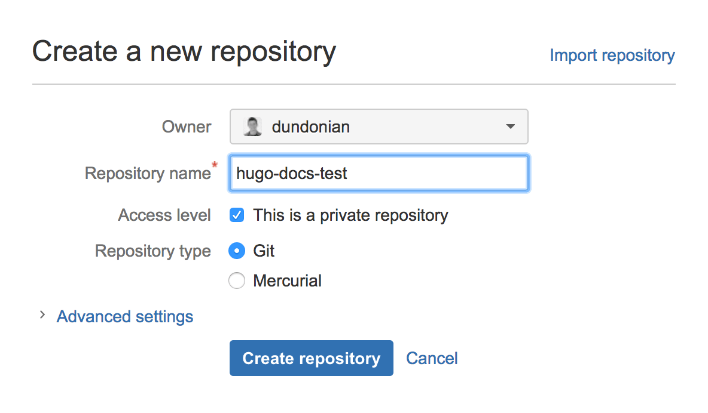
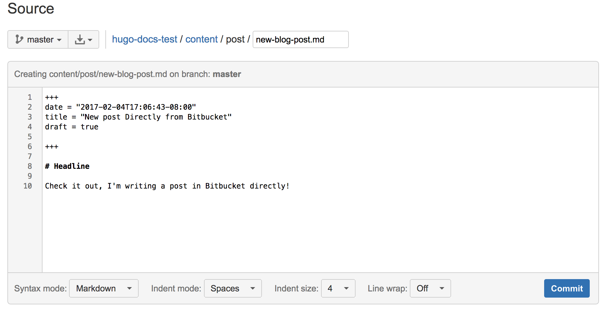

Continuous deployment with Bitbucket & Aerobatic
Introduction
In this tutorial, we will use Bitbucket and Aerobatic to build, deploy, and host a Hugo site. Aerobatic is a static hosting service that integrates with Bitbucket and provides a free hosting tier.
It is assumed that you know how to use git for version control and have a Bitbucket account.
Install Aerobatic CLI
If you haven’t previously used Aerobatic, you’ll first need to install the Command Line Interface (CLI) and create an account. For a list of all commands available, see the Aerobatic CLI docs.
npm install aerobatic-cli -g
aero register
Create and Deploy Site
hugo new site my-new-hugo-site
cd my-new-hugo-site
cd themes; git clone https://github.com/eliasson/liquorice
hugo -t liquorice
aero create # create the Aerobatic site
hugo --baseURL https://my-new-hugo-site.aerobatic.io # build the site overriding baseURL
aero deploy -d public # deploy output to Aerobatic
Version v1 deployment complete.
View now at https://hugo-docs-test.aerobatic.io
In the rendered page response, the https://__baseurl__ will be replaced with your actual site url (in this example, https://my-new-hugo-site.aerobatic.io). You can always rename your Aerobatic website with the aero rename command.
Push Hugo site to Bitbucket
We will now create a git repository and then push our code to Bitbucket. In Bitbucket, create a repository.

# initialize new git repository
git init
# set up our .gitignore file
echo -e "/public \n/themes \naero-deploy.tar.gz" >> .gitignore
# commit and push code to master branch
git add --all
git commit -m "Initial commit"
git remote add origin git@bitbucket.org:YourUsername/my-new-hugo-site.git
git push -u origin master
Continuous Deployment With Bitbucket Pipelines
In the example above, we pushed the compiled assets in the /public folder to Aerobatic. In the following example, we use Bitbucket Pipelines to continuously create and deploy the compiled assets to Aerobatic.
Step 1: Configure Bitbucket Pipelines
In your Hugo website’s Bitbucket repo;
- Click the Pipelines link in the left nav menu of your Bitbucket repository.
- Click the Enable Pipelines button.
- On the next screen, leave the default template and click Next.
- In the editor, paste in the yaml contents below and click Commit.
image: beevelop/nodejs-python
pipelines:
branches:
master:
- step:
script:
- apt-get update -y && apt-get install wget
- apt-get -y install git
- wget https://github.com/spf13/hugo/releases/download/v0.18/hugo_0.18-64bit.deb
- dpkg -i hugo*.deb
- git clone https://github.com/eliasson/liquorice themes/liquorice
- hugo --theme=liquorice --baseURL https://__baseurl__ --buildDrafts
- npm install -g aerobatic-cli
- aero deploy
Step 2: Create AEROBATIC_API_KEY environment variable.
This step only needs to be done once per account. From the command line;
aero apikey
- Navigate to the Bitbucket account settings for the account that the website repo belongs to.
- Scroll down to the bottom of the left nav and click the Environment variables link in the PIPELINES section.
- Create a new environment variable called AEROBATIC_API_KEY with the value you got by running the
aero apikeycommand. Be sure to click the Secured checkbox.
Step 3: Edit and Commit Code
hugo new post/good-to-great.md
hugo server --buildDrafts -t liquorice #Check that all looks good
# commit and push code to master branch
git add --all
git commit -m "New blog post"
git push -u origin master
Your code will be committed to Bitbucket, Bitbucket Pipelines will run your build, and a new version of your site will be deployed to Aerobatic.
At this point, you can now create and edit blog posts directly in the Bitbucket UI.

Suggested next steps
The code for this example can be found in this Bitbucket repository. Aerobatic also provides a number of additional plugins such as auth and redirects that you can use for your Hugo site.